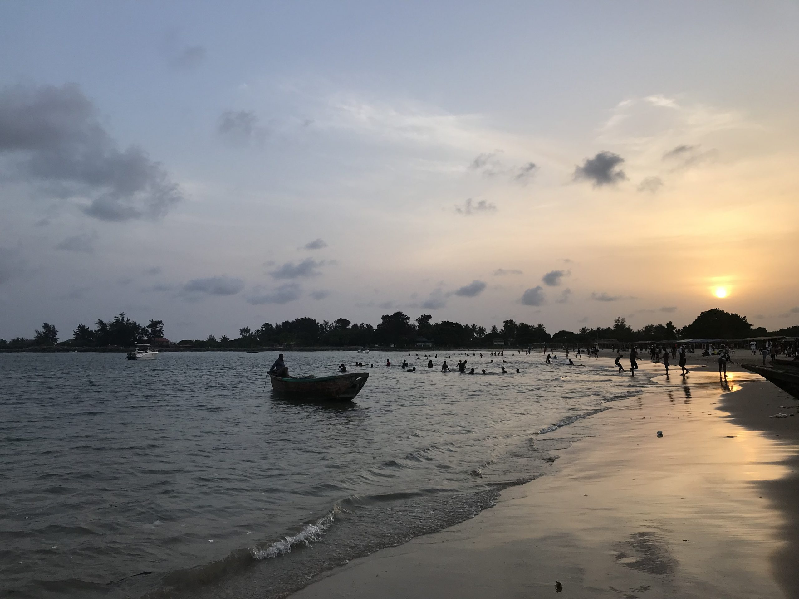
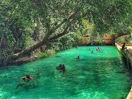
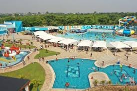

Top 5 places in nigeria
A holiday in Nigeria is full of adventure, culture, and relaxation. Enjoy wildlife at Yankari Game Reserve, relax on Tarkwa Bay Beach, and explore vibrant cities like Lagos and Abuja. With great food, friendly people, and exciting nightlife, it’s a perfect place for a fun getaway.
Tarkwa Bay Beach

Tarkwa Bay Beach is a peaceful island beach near Lagos, Nigeria, only accessible by boat. It has soft sand, clear water, and gentle waves, making it great for swimming, sunbathing, and water sports like jet skiing and surfing. With coconut trees and beachside huts, it offers a relaxed, tropical vibe. Friendly locals sell refreshments, crafts, and even offer surfing lessons. Whether you want adventure or a quiet escape, Tarkwa Bay Beach is a perfect getaway from the busy city.
Zuma Rock
Zuma Rock is a giant rock in Niger State, Nigeria, standing 725 meters tall. Known as the "Gateway to Abuja," it is famous for its mysterious legends. Many believe it has spiritual powers and protects the land. The rock’s surface shows a human-like face, which has sparked myths about ancient spirits. Some locals claim to hear strange sounds or see mysterious flames around it. Whether seen as a natural wonder or a sacred site, Zuma Rock remains a fascinating and mysterious landmark in Nigeria.
Yankari Game Reserve

Yankari Game Reserve is Nigeria’s largest wildlife park, located in Bauchi State. It is home to a wide variety of animals, including elephants, lions, baboons, and antelopes, making it a great destination for nature lovers and tourists. The reserve also has warm natural springs, like the popular Wikki Warm Spring, where visitors can relax in crystal-clear water. With its diverse wildlife, beautiful landscapes, and rich history, Yankari offers an exciting safari experience and a chance to explore Nigeria’s natural beauty.
Victoria Island, Lagos
Victoria Island, Lagos, is a lively and upscale area known for its businesses, luxury hotels, and exciting nightlife. It has some of the best clubs, like Quilox and Cubana, where people enjoy music, dancing, and top DJs. Whether you want a fun party or a stylish night out, Victoria Island is the place to be for great nightlife in Lagos.
Park Vega Waterpark

Park Vega Waterpark in Delta State, Nigeria, is a fun destination with exciting water slides, a lazy river, wave pools, and play areas for all ages. It offers both thrills and relaxation in a tropical setting. Visitors can enjoy exciting rides, relax in lounge areas, and enjoy tasty food. With friendly staff and a family-friendly environment, it’s a great place for a fun day out with family and friends.